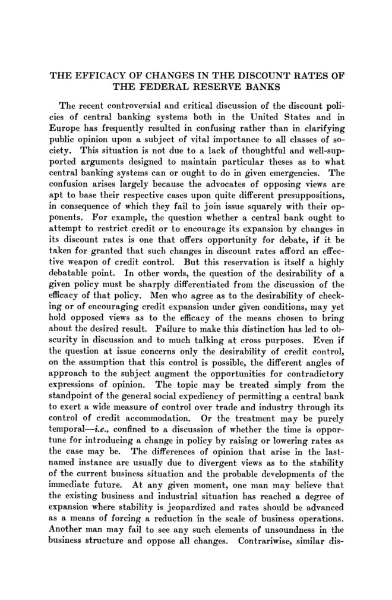

Youngman e a taxa que seguia o mercado
Leitura: 8 min
Anna Youngman argumenta que as altas da taxa de redesconto de 1919–1920 não foram a arma efetiva da contração do crédito e propõe criar mercados de desconto amplos e competitivos.


Em 23 de janeiro de 1920, o Federal Reserve Bank de Nova York elevou para 6% sua taxa para papel comercial. A taxa de mercado já estava em 6% havia semanas. Quando, em 1º de junho, a taxa oficial subiu para 7%, o papel comercial era negociado a 7,5% havia nove semanas. Para Anna Youngman, do Brooklyn, os dois episódios resumem o problema de seu artigo na American Economic Review de setembro de 1921: a taxa do banco central seguia o mercado, em vez de conduzi-lo.
Convém usar a taxa ou ela funciona?
A autora começa separando duas questões que, a seu ver, o debate confundia. Uma é a conveniência de restringir ou estimular o crédito em dado momento; outra é a eficácia da taxa de desconto como meio para isso. Pessoas que concordam sobre o fim podem divergir sobre o meio, e a falta dessa distinção produzia discussões em que os lados não se encontravam. Há ainda divergências de momento: quem pede alta de juros numa fase pode pedir redução em outra sem incoerência.
Na Europa, lembra, muitos opositores da alta de juros não eram inflacionistas. Vissering, na conferência financeira internacional de Bruxelas, argumentou que a abundância de moeda depreciada não viera de crédito fácil nem de especulação e que a alta da taxa não teria efeito; os remédios seriam a amortização da dívida pública e o racionamento do crédito pelo banco emissor. McKenna, em 28 de janeiro de 1921, disse aos acionistas do London Joint City and Midland que a inflação monetária só se desfaria com o pagamento de parte da dívida nacional. O Economist de Londres seguiu a mesma linha.
O que dizia o próprio Federal Reserve?
Nos Estados Unidos, a opinião técnica, representada por Sprague e Moulton, tratava a eficácia como dada, e o Federal Reserve Board parecia aceitá-la. Em carta de 10 de junho de 1919, o Board dizia que a especulação poderia normalmente ser corrigida por uma alta da taxa, impraticável naquele momento por causa do financiamento do governo. Em julho de 1920, o boletim do Board afirmava que o controle por meio de taxas mais altas tivera sucesso marcado. Mas em outubro de 1919 o mesmo boletim admitira não haver meio, no sistema de reservas, de negar crédito a usos indesejáveis sem negá-lo também aos desejáveis.
Diante de opiniões oficiais que se anulam, conclui a autora, a autoridade não decide a questão; tampouco as estatísticas, porque as forças que criam ou destroem crédito são numerosas demais para isolar o efeito de uma só, e os mesmos dados servem aos dois lados. Trata-se de argumentar a priori, com apoio apenas negativo dos fatos.
Juros altos afastam o especulador?
Gustav Cassel, no memorando preparado para Bruxelas, defendera que juros altos, ao exprimir a escassez real de capital, dispensariam restrições burocráticas ao crédito. Os críticos perguntavam por que o especulador, à espera de lucros excepcionais com preços em alta, reduziria suas operações por causa de um ou dois pontos a mais de juros. Youngman acha que, sem dados sobre o peso dos juros para cada grupo, uma opinião vale tanto quanto outra, e que separar especulação ilegítima de negócio normal é tarefa impossível.
Ela rejeita também a analogia entre a taxa de desconto e o preço de uma mercadoria escassa. Juros mais altos podem deslocar empréstimos de uma praça para outra, mas não fazem surgir novos fundos bancários; o banco vende serviços de transferência de bens e de crédito, limitados por uma reserva que ele próprio pode obter tomando emprestado. Num auge, o tomador marginal pagaria mais, o que mostra que as taxas não são fixadas de forma estritamente competitiva.
Daí sua tese sobre custos: a insistência na eficácia dos juros de curto prazo exagera seu peso nas despesas de produção, dominadas por trabalho e materiais. O juro parece grande ao tomador porque não vem acompanhado de um bem tangível, e quando o negócio vai mal recebe uma parte desproporcional da culpa. A dependência de crédito bancário varia muito entre empresas, e por isso mudanças fortes de taxa afetam concorrentes de forma desigual.
Por que o sistema americano não é o Banco da Inglaterra?
O ponto central do artigo é que a discussão americana supunha uma relação direta entre a taxa oficial e as taxas de mercado, como no sistema inglês. Mesmo o Banco da Inglaterra, lembra a autora, tinha dificuldade de impor sua taxa antes da guerra, e sua autoridade repousava na deferência voluntária do mercado. Nos Estados Unidos não há costume nem lei que alinhe as taxas. Os doze bancos regionais servem a milhares de bancos pequenos, de interesses domésticos, que sentem pouco a concorrência; os bancos de reserva evitam redescontar entre si, e a própria lei preferiu doze bancos a um só.
As taxas locais variam muito, e o tomador de uma cidade pequena muitas vezes não tem alternativa ao banco local. Que efeito tem uma alta fracionária, pergunta Youngman, sobre um banco de um estado do oeste ou do sudoeste que empresta a 8%, 10% ou 12%? Nenhum, se ele está pressionado por pedidos e vê lucro no redesconto. O único remédio, nesse caso, é a recusa pura e simples de emprestar.
“A recusa direta de expandir certas classes de empréstimos e a pressão pelo pagamento de outros foram os fatores eficazes.” (“Downright refusal to expand certain classes of loans and pressure for repayment of others were the potent factors.”)
A autora admite que a política anunciada pelo Board, sinalizada pelas altas de taxa, apressou uma contração inevitável e atenuou suas consequências. Mas as altas, diz, só tiveram efeito porque vieram acompanhadas de ação direta. O boletim de setembro de 1920 registrava que as taxas médias do banco de Nova York ficaram cerca de 1,5 ponto abaixo do mercado até novembro de 1919. A taxa oficial, nesse quadro, premiava o redesconto em vez de penalizá-lo, e o efeito de sinal só funciona quando coincide com o interesse de quem o recebe.
O que seria preciso para a taxa funcionar?
Primeiro, manter as taxas oficiais acima das de mercado nos grandes centros, para que o redesconto deixe de ser fonte de lucro e os bancos membros não usem os recursos do sistema como acréscimo permanente de capital. A autora relata um estudo próprio sobre onze grandes bancos de Nova York em 1918 e 1919: alguns expandiram operações sem relação com sua capacidade, enquanto outros só redescontaram com relutância no fim de 1919.
Segundo, criar mercados de desconto amplos e competitivos. As operações de mercado aberto se limitavam à compra de aceites bancários a taxas artificialmente baixas, e esse mercado não se desenvolvera como se esperava: em 1º de abril de 1921 havia US$ 664,1 milhões em aceites, 18% menos que um ano antes. Ela propõe estender as operações a notas promissórias comerciais, base do crédito doméstico, e permitir empréstimos contra garantia de ações, a taxas de mercado. As proibições existentes, argumenta, não impediam que os recursos chegassem à especulação; só aumentavam a incerteza e as oscilações das taxas.
Quanto ao mercado de call de Nova York, Youngman observa que a demanda especulativa num auge é muito inelástica: taxas altas não significam demanda contida, e podem atrair fundos que iriam para outros empréstimos. Se os bancos de reserva pudessem quebrar taxas anormais por empréstimo direto, prestariam um serviço. O objetivo geral é evitar deslocamentos bruscos do crédito entre usos comerciais e de investimento, porque ambos sustentam a liquidez um do outro.
Na minha leitura
Na minha leitura, a contribuição mais duradoura de Youngman é metodológica: distinguir o que uma política pretende do que o instrumento consegue fazer, e perguntar se um indicador antecede ou acompanha aquilo que supostamente causa. Quando a taxa oficial sobe depois das taxas de mercado, a correlação entre alta de juros e contração do crédito não prova que a primeira produziu a segunda.
O artigo também mostra que a transmissão da política monetária depende da estrutura do sistema financeiro. Num mercado fragmentado, com bancos locais e pouca concorrência, a taxa do banco central chega fraca ao tomador final. A autora não descarta o instrumento; argumenta que sua eficácia teria de ser construída, com taxas acima do mercado e mercados de desconto capazes de transmitir o sinal.
Glossário
- Taxa de redesconto
- juro cobrado pelo banco central ao descontar títulos apresentados pelos bancos comerciais.
- Bancos membros
- bancos comerciais filiados ao Federal Reserve, obrigados a manter reservas nos bancos regionais.
- Operações de mercado aberto
- compra e venda de títulos pelo banco central no mercado, por iniciativa própria.
- Aceite bancário
- letra de câmbio que um banco se compromete a pagar no vencimento.
- Mercado de call
- mercado de empréstimos resgatáveis a qualquer momento, em geral garantidos por ações.
Fontes
- The Efficacy of Changes in the Discount Rates of the Federal Reserve Banks — Anna Youngman (Brooklyn, N. Y.) (pp. 466–485). JSTOR · Internet Archive (PDF)
- Edição completa, com os demais artigos: Nº 171 do Arquivo.
Documento em domínio público (EUA, publicado antes de 1931), via JSTOR Early Journal Content e Internet Archive. Resumo e comentário do autor deste site, sem afiliação com a American Economic Association. Encontrou um erro? Escreva: a correção é publicada no próprio texto, com data.
← Stecker e a família que o orçamento inventou ↑ Nº 171 · Salário real, orçamento de família e o limite da taxa de redesconto